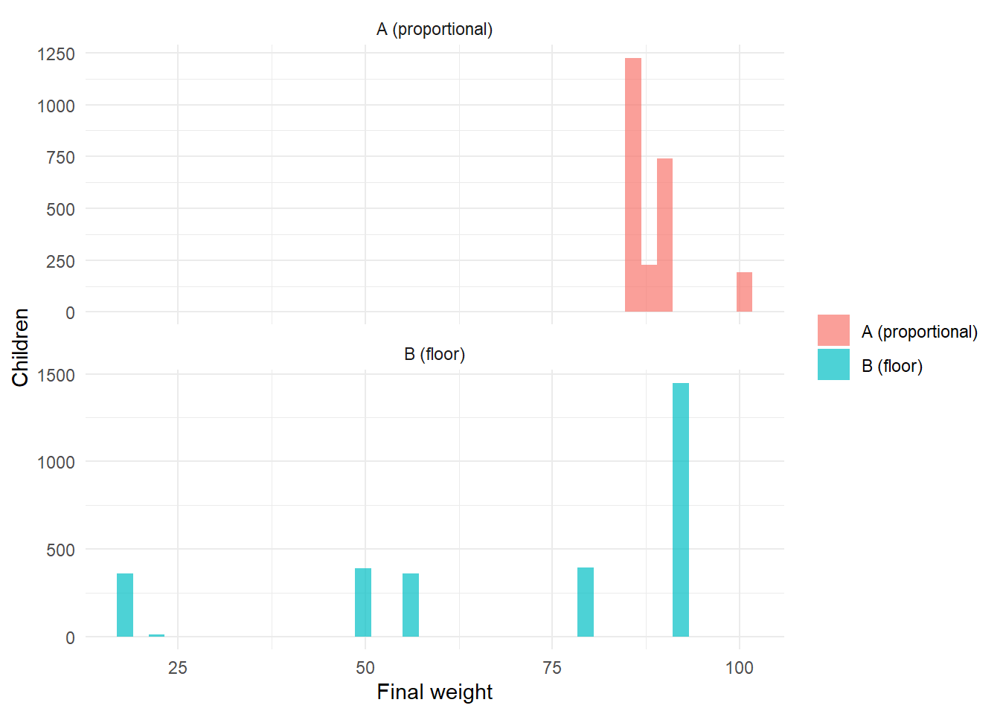
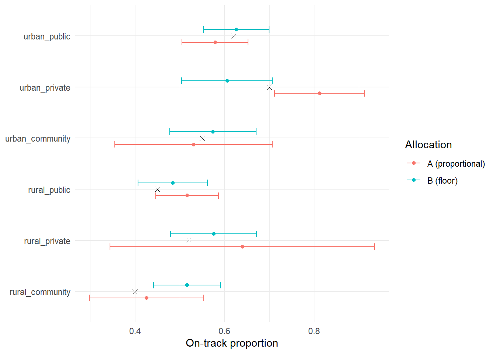

# ---------------------------------------------------------------------------
# This notebook is written to be RE-USABLE. Every design parameter lives in the
# `params` chunk below; every downstream computation reads from `params` or from
# the realised frame, so nothing is hard-coded mid-pipeline. Swap the parameters
# (or the frame generator) and the whole design re-derives itself.
# ---------------------------------------------------------------------------
library(dplyr) # data manipulation
library(tidyr) # reshaping (pivot_* for the comparison tables)
library(ggplot2) # diagnostics plots
library(sampling) # inclusionprobabilities(), UPsystematic() -> PPS machinery
library(survey) # svydesign(), svymean(), svyby(), postStratify() -> estimation
library(knitr) # kable() for clean tables
# srvyr is a tidy wrapper around `survey`; we use base `survey` here for
# transparency and robustness, but the design object is srvyr-compatible.
options(survey.lonely.psu = "adjust") # safe handling of any single-PSU stratumDesigning the Sample for a National Early-Learning Study (MELQO-type)
Stratified two-stage PPS design — proportional vs floor-constrained allocation
R
survey-sampling
stratification
PPS
weighting
design-effect
education
MELQO
preschool
A reproducible survey-sampling design for a national study of early-learning outcomes and preschool quality, framed on the MELQO measurement tradition (child-level “on-track” outcomes + centre-level quality), in a generic francophone Sub-Saharan African setting. The piece builds a realistic simulated sampling frame of preschool centres and engineers a stratified, two-stage design: PPS-systematic selection of centres (first stage) and a fixed number of children per centre (second stage), with region handled by implicit stratification. Two allocation philosophies are compared on the same design: Part A (proportional, self-weighting, nationally efficient) and Part B (a per-stratum floor that guarantees robust estimates for every milieu × type domain). The notebook covers sample-size determination, PPS draws, inclusion probabilities, base weights, non-response and calibration adjustments, design diagnostics (self-weighting, realised DEFF, domain coverage), and design-based estimation with correct Taylor-linearised CIs.
params <- list(
# --- Inferential targets -------------------------------------------------
P0 = 0.50, # planning value for the proportion (0.5 = max variance)
e_nat = 0.04, # target half-width (margin of error) at NATIONAL level
conf = 0.95, # confidence level
# --- Clustering assumptions ---------------------------------------------
ICC = 0.15, # intra-centre correlation for early-learning outcomes
m_target = 20L, # children sampled per selected centre (2nd-stage size)
sigma_u = 1.0, # centre random intercept (logit) -> manifest ICC ~ 0.13-0.18
# --- Field response assumptions -----------------------------------------
rr_center = 0.90, # expected centre-level response rate
rr_child = 0.95, # expected child-level response rate (within centre)
# --- Part B: per-domain robustness target -------------------------------
e_domain = 0.10, # target half-width for EACH milieu x type domain
# --- Frame size ----------------------------------------------------------
N_centers = 3500L, # number of preschool centres in the (simulated) frame
N_regions = 12L, # number of administrative regions
seed = 2026L
)
z <- qnorm(1 - (1 - params$conf) / 2) # ~1.96 for 95%
set.seed(params$seed)1 Context and objectives
We design the sample for a national study of early learning in a generic francophone Sub-Saharan African country, in the spirit of MELQO (Measuring Early Learning Quality and Outcomes): a child-level developmental/learning outcome and centre-level quality measures.
The headline estimand is the proportion of children “on track” for their age. We want this:
- precise at the national level (±4% at 95% confidence), and
- reportable across equity domains — the six cells of milieu (urban/rural) × type (public/community/private) — and, indicatively, by region.
The sampling unit is the preschool centre (primary sampling unit, PSU); children are selected within centres (secondary units). Region is controlled by implicit stratification (sort order before the systematic PPS draw) rather than by an explicit stratum, to keep the number of strata compatible with two-stage variance estimation.
Transferability to the IIEP ToR (volet 5). This piece demonstrates, on a reproducible toy frame, the full chain a real preschool study requires: sample-frame construction, stratification, sample-size determination, PPS draw, weighting, and design-based estimation with equity disaggregation. The live study would replace the simulated frame with the national centre census and add field contextualisation/piloting of instruments.
2 Simulated sampling frame
We generate a frame that is structurally realistic: regions of unequal size, type composition that differs by milieu (private concentrated in urban areas), and enrolment that varies by stratum (urban and public centres larger). The true domain “on-track” probabilities are fixed by design so that we can later check that the estimator recovers them.
# --- 1. Region: 12 regions of deliberately UNEQUAL size --------------------
# Dirichlet-like weights so region shares are uneven (some large, some small).
region_w <- sort(runif(params$N_regions, 0.5, 2), decreasing = TRUE)
region_w <- region_w / sum(region_w)
frame <- tibble(
center_id = sprintf("C%05d", seq_len(params$N_centers)),
region = factor(sample(seq_len(params$N_regions), params$N_centers,
replace = TRUE, prob = region_w))
)
# --- 2. Milieu: 35% urban / 65% rural --------------------------------------
frame <- frame |>
mutate(milieu = factor(
if_else(runif(params$N_centers) < 0.35, "urban", "rural"),
levels = c("urban", "rural")))
# --- 3. Type: composition DIFFERS by milieu --------------------------------
# Private is concentrated in towns; rural is overwhelmingly public.
draw_type <- function(milieu) {
p <- if (milieu == "urban") c(public = 0.50, community = 0.25, private = 0.25)
else c(public = 0.60, community = 0.33, private = 0.07)
sample(names(p), 1, prob = p)
}
frame <- frame |>
rowwise() |>
mutate(type = draw_type(milieu)) |>
ungroup() |>
mutate(type = factor(type, levels = c("public", "community", "private")))
# --- 4. Enrolment: lognormal, mean depends on milieu x type ----------------
# Mean enrolment table (children per centre). Community centres are smaller.
mean_enrol <- tribble(
~milieu, ~type, ~mu_enrol,
"urban", "public", 90,
"urban", "community", 60,
"urban", "private", 70,
"rural", "public", 55,
"rural", "community", 40,
"rural", "private", 45
)
sdlog <- 0.40 # lognormal shape (moderate right skew, realistic for enrolment)
frame <- frame |>
left_join(mean_enrol, by = c("milieu", "type")) |>
mutate(
# lognormal with target mean = mu_enrol => meanlog = log(mu) - sdlog^2/2
enrol = round(rlnorm(n(), meanlog = log(mu_enrol) - sdlog^2 / 2, sdlog = sdlog)),
enrol = pmax(enrol, 8L) # floor: a centre has at least 8 children
) |>
select(-mu_enrol)
# --- 5. Stratum = milieu x type (the 6 EXPLICIT strata = estimation domains)
frame <- frame |>
mutate(stratum = factor(paste(milieu, type, sep = "_")))
# --- 6. TRUE domain on-track probabilities (ground truth for validation) ---
true_p <- tribble(
~stratum, ~p_true,
"urban_public", 0.62,
"urban_community", 0.55,
"urban_private", 0.70,
"rural_public", 0.45,
"rural_community", 0.40,
"rural_private", 0.52
)
frame <- frame |> left_join(true_p, by = "stratum")
# Centre-level random intercept on the logit scale: induces real within-centre
# correlation so the EMPIRICAL ICC matches the planning value used for sizing.
frame <- frame |> mutate(u_center = rnorm(n(), 0, params$sigma_u))
glimpse(frame)Rows: 3,500
Columns: 8
$ center_id <chr> "C00001", "C00002", "C00003", "C00004", "C00005", "C00006", …
$ region <fct> 2, 9, 2, 4, 5, 1, 3, 1, 3, 3, 2, 1, 4, 2, 4, 2, 1, 6, 10, 2,…
$ milieu <chr> "urban", "urban", "rural", "rural", "urban", "urban", "rural…
$ type <chr> "community", "community", "public", "community", "community"…
$ enrol <dbl> 62, 63, 61, 27, 49, 167, 36, 31, 85, 54, 61, 130, 26, 62, 40…
$ stratum <chr> "urban_community", "urban_community", "rural_public", "rural…
$ p_true <dbl> 0.55, 0.55, 0.45, 0.40, 0.55, 0.62, 0.45, 0.40, 0.45, 0.62, …
$ u_center <dbl> -0.04026169, -0.15529162, 0.69983605, 1.02543385, -1.6548350…# The national truth is the ENROLMENT-weighted average of domain probabilities
# (children, not centres, are the unit of the estimand).
P_true_national <- with(frame,
sum(enrol * plogis(qlogis(p_true) + u_center)) / sum(enrol))
frame |>
group_by(stratum) |>
summarise(n_centers = n(),
children = sum(enrol),
p_true = first(p_true), .groups = "drop") |>
mutate(child_share = round(children / sum(children), 3)) |>
kable(caption = sprintf(
"Simulated frame by domain. True national on-track proportion = %.3f",
P_true_national))| stratum | n_centers | children | p_true | child_share |
|---|---|---|---|---|
| rural_community | 768 | 31311 | 0.40 | 0.148 |
| rural_private | 149 | 6807 | 0.52 | 0.032 |
| rural_public | 1326 | 73716 | 0.45 | 0.349 |
| urban_community | 312 | 19325 | 0.55 | 0.091 |
| urban_private | 296 | 20045 | 0.70 | 0.095 |
| urban_public | 649 | 60067 | 0.62 | 0.284 |
3 Stratification and implicit geographic control
- Explicit strata: the six
milieu × typecells. Because these are the estimation domains, stratifying on them (i) removes between-domain variance from the national estimate and (ii) lets Part B place a sample-size floor on each domain directly. - Implicit stratification by region: within each stratum we sort the frame by region (then by enrolment) before the systematic PPS draw. A systematic draw over a sorted list spreads the sample proportionally across regions without consuming degrees of freedom on extra strata — region remains available as an indicative breakdown, but is not a guaranteed-precision domain.
This keeps 6 strata with many PSUs each (clean Taylor-linearised variances), instead of 72 thin strata (< 2 PSU each) that two-stage variance estimation cannot support.
4 Sample size determination
Three steps: (1) the simple-random-sample size for the national target; (2) inflate by the design effect from clustering; (3) inflate again for non-response to get the number of centres to select.
# (1) SRS size for a proportion: n = z^2 * P(1-P) / e^2
n_srs <- ceiling(z^2 * params$P0 * (1 - params$P0) / params$e_nat^2)
# (2) Design effect from clustering (Kish): DEFF = 1 + (m - 1) * ICC
deff_plan <- 1 + (params$m_target - 1) * params$ICC
# Effective -> actual children needed under the clustered design
children_needed <- ceiling(n_srs * deff_plan)
# (3) Non-response: we must SELECT more so that the EXPECTED number of
# RESPONDING children meets `children_needed`.
# responding children ~ n_centers * m * rr_center * rr_child
resp_factor <- params$rr_center * params$rr_child
n_centers_nat <- ceiling(children_needed / (params$m_target * resp_factor))
tibble(
quantity = c("z", "n_SRS", "DEFF_plan", "children_needed (effective x DEFF)",
"response factor", "centres to SELECT (national)"),
value = c(round(z, 3), n_srs, round(deff_plan, 3),
children_needed, round(resp_factor, 3), n_centers_nat)
) |>
kable(caption = "Sample-size build-up (national target).")| quantity | value |
|---|---|
| z | 1.960 |
| n_SRS | 601.000 |
| DEFF_plan | 3.850 |
| children_needed (effective x DEFF) | 2314.000 |
| response factor | 0.855 |
| centres to SELECT (national) | 136.000 |
# Same logic applied to a per-DOMAIN target half-width (params$e_domain).
n_srs_dom <- ceiling(z^2 * 0.25 / params$e_domain^2)
children_dom <- ceiling(n_srs_dom * deff_plan)
centers_floor <- ceiling(children_dom / (params$m_target * resp_factor))
tibble(
quantity = c("n_SRS per domain", "children per domain (x DEFF)",
"FLOOR: centres per domain (Part B)"),
value = c(n_srs_dom, children_dom, centers_floor)
) |>
kable(caption = sprintf(
"Per-domain floor for Part B (target +/- %.0f%%).", params$e_domain * 100))| quantity | value |
|---|---|
| n_SRS per domain | 97 |
| children per domain (x DEFF) | 374 |
| FLOOR: centres per domain (Part B) | 22 |
5 Allocation: proportional (Part A) vs floor-constrained (Part B)
The design (stratified, two-stage, PPS) is identical for A and B. Only the allocation of centres to strata differs.
Part A — proportional to stratum enrolment. Allocating centres in proportion to each stratum’s enrolment M_h makes the two-stage PPS design self-weighting (epsem): combined inclusion probability pi = n_h * m / M_h is constant when n_h ∝ M_h. Weights are ~equal, the national estimate is maximally efficient — but small domains receive very few centres, so domain estimates are unusable. This is the limitation we expose.
Part B — proportional, then a floor. We take n_h = max(proportional_h, floor). Every domain now reaches the precision target. The price, quantified later, is that the design is no longer self-weighting: weights vary, DEFF rises, and calibration becomes necessary.
# Stratum enrolment totals M_h (drives proportional allocation)
strata_tab <- frame |>
group_by(stratum) |>
summarise(N_h = n(), M_h = sum(enrol), .groups = "drop") |>
mutate(M_share = M_h / sum(M_h))
# --- Part A: proportional to enrolment, integer via largest-remainder -------
largest_remainder <- function(shares, total) {
raw <- shares * total
base <- floor(raw)
rem <- total - sum(base)
ord <- order(raw - base, decreasing = TRUE)
base[ord[seq_len(rem)]] <- base[ord[seq_len(rem)]] + 1L
as.integer(base)
}
strata_tab <- strata_tab |>
mutate(nA = largest_remainder(M_share, n_centers_nat))
# --- Part B: apply the per-domain floor ------------------------------------
strata_tab <- strata_tab |>
mutate(nB = pmax(nA, centers_floor),
nB = pmin(nB, N_h)) # never ask for more centres than exist
strata_tab |>
mutate(across(c(M_share), ~round(.x, 3))) |>
kable(caption = sprintf(
"Allocation. Part A total = %d centres; Part B total = %d centres (+%d).",
sum(strata_tab$nA), sum(strata_tab$nB),
sum(strata_tab$nB) - sum(strata_tab$nA)))| stratum | N_h | M_h | M_share | nA | nB |
|---|---|---|---|---|---|
| rural_community | 768 | 31311 | 0.148 | 20 | 22 |
| rural_private | 149 | 6807 | 0.032 | 4 | 22 |
| rural_public | 1326 | 73716 | 0.349 | 48 | 48 |
| urban_community | 312 | 19325 | 0.091 | 12 | 22 |
| urban_private | 296 | 20045 | 0.095 | 13 | 22 |
| urban_public | 649 | 60067 | 0.284 | 39 | 39 |
6 First-stage selection: PPS systematic
Within each stratum we (i) sort by region then enrolment (implicit stratification), (ii) compute inclusion probabilities proportional to enrolment with sampling::inclusionprobabilities() (which correctly caps any centre whose size would give pi > 1), and (iii) draw with sampling::UPsystematic().
# Returns the input stratum frame with first-stage inclusion prob pi1 and a
# selection flag. n_h is the number of centres to draw in this stratum.
draw_stage1 <- function(frame_h, n_h) {
# Implicit stratification: order so the systematic draw spreads over regions.
frame_h <- frame_h |> arrange(region, desc(enrol))
if (n_h >= nrow(frame_h)) {
# Take-all stratum: every centre selected with certainty.
frame_h$pi1 <- 1
frame_h$sel1 <- 1L
return(frame_h)
}
# Inclusion probabilities proportional to size (enrolment), summing to n_h.
pik <- sampling::inclusionprobabilities(frame_h$enrol, n_h)
sel <- sampling::UPsystematic(pik) # 0/1 selection vector
frame_h$pi1 <- pik
frame_h$sel1 <- as.integer(sel)
frame_h
}run_stage1 <- function(alloc_col) {
alloc <- strata_tab |> select(stratum, n_h = all_of(alloc_col))
frame |>
left_join(alloc, by = "stratum") |>
group_split(stratum) |>
lapply(\(df) draw_stage1(df, df$n_h[1])) |>
bind_rows() |>
filter(sel1 == 1L)
}
sel_centers_A <- run_stage1("nA")
sel_centers_B <- run_stage1("nB")
# Quick check: number of selected centres per domain, A vs B.
bind_rows(
count(sel_centers_A, stratum, name = "A"),
count(sel_centers_B, stratum, name = "B") |> select(stratum, B)
) |>
group_by(stratum) |>
summarise(across(c(A, B), ~sum(.x, na.rm = TRUE)), .groups = "drop") |>
kable(caption = "Selected centres per domain (first stage).")| stratum | A | B |
|---|---|---|
| rural_community | 20 | 22 |
| rural_private | 4 | 22 |
| rural_public | 48 | 48 |
| urban_community | 12 | 22 |
| urban_private | 13 | 22 |
| urban_public | 39 | 39 |
7 Second-stage selection: fixed cluster size
In each selected centre we draw m_target children by simple random sampling (all children if the centre is smaller than m_target). The second-stage inclusion probability is pi2 = min(m, M_i) / M_i.
# Expand selected centres into child-level rows, simulate the on-track outcome
# (truth = stratum p_true), then apply non-response at centre and child level.
expand_children <- function(sel_centers, params) {
m <- params$m_target
sel_centers <- sel_centers |>
mutate(m_i = pmin(m, enrol), # children actually sampled in centre i
pi2 = m_i / enrol, # 2nd-stage inclusion probability
pi = pi1 * pi2, # overall inclusion probability
# Centre-level response (whole centre in or out):
center_responds = rbinom(n(), 1, params$rr_center))
# Build child rows only for responding centres.
kids <- sel_centers |>
filter(center_responds == 1L) |>
rowwise() |>
mutate(child = list(seq_len(m_i))) |>
ungroup() |>
tidyr::unnest(child) |>
mutate(
# Child-level response within a responding centre:
child_responds = rbinom(n(), 1, params$rr_child),
# Outcome drawn from the TRUE domain probability:
ontrack = rbinom(n(), 1, plogis(qlogis(p_true) + u_center)) # NEW: ICC > 0
) |>
filter(child_responds == 1L)
list(centers = sel_centers, kids = kids)
}
samp_A <- expand_children(sel_centers_A, params)
samp_B <- expand_children(sel_centers_B, params)8 Inclusion probabilities, base weights, non-response and calibration
Base weight = 1 / pi. We then apply two non-response adjustments (weighting classes = stratum) and a final post-stratification of the child weights to the known population child totals by domain.
build_weights <- function(samp, frame) {
centers <- samp$centers
kids <- samp$kids
# --- (a) Centre non-response adjustment, within stratum --------------------
# factor = (centres selected) / (centres that responded)
c_nr <- centers |>
group_by(stratum) |>
summarise(sel = n(),
resp = sum(center_responds), .groups = "drop") |>
mutate(adj_center = sel / resp)
# --- (b) Child non-response adjustment, within stratum ---------------------
# factor = (children sampled in responding centres) / (children that responded)
ch_sampled <- centers |>
filter(center_responds == 1L) |>
group_by(stratum) |> summarise(samp_kids = sum(m_i), .groups = "drop")
ch_resp <- kids |>
group_by(stratum) |> summarise(resp_kids = n(), .groups = "drop")
ch_nr <- left_join(ch_sampled, ch_resp, by = "stratum") |>
mutate(adj_child = samp_kids / resp_kids)
kids <- kids |>
mutate(w_base = 1 / pi) |>
left_join(select(c_nr, stratum, adj_center), by = "stratum") |>
left_join(select(ch_nr, stratum, adj_child), by = "stratum") |>
mutate(w_nr = w_base * adj_center * adj_child)
# --- (c) Post-stratification (calibration) to population child totals ------
# Known truth from the frame: children per domain.
pop_dom <- frame |>
group_by(stratum) |> summarise(Nhat = sum(enrol), .groups = "drop")
est_dom <- kids |>
group_by(stratum) |> summarise(West = sum(w_nr), .groups = "drop")
cal <- left_join(pop_dom, est_dom, by = "stratum") |>
mutate(g = Nhat / West)
kids <- kids |>
left_join(select(cal, stratum, g), by = "stratum") |>
mutate(w_final = w_nr * g)
kids
}
kids_A <- build_weights(samp_A, frame)
kids_B <- build_weights(samp_B, frame)9 Diagnostics: self-weighting, realised DEFF, domain coverage
We compare the two allocations on three diagnostics: weight variation (is the design self-weighting?), the Kish design effect from unequal weights 1 + CV(w)^2, and domain coverage (children landing in each domain).
kish_deff <- function(w) {
# Kish 1965 approximation of the design effect due to unequal weights.
n <- length(w)
n * sum(w^2) / sum(w)^2
}
diag_tbl <- tibble(
allocation = c("A (proportional)", "B (floor)"),
n_centers = c(n_distinct(kids_A$center_id), n_distinct(kids_B$center_id)),
n_children = c(nrow(kids_A), nrow(kids_B)),
cv_weights = c(sd(kids_A$w_final) / mean(kids_A$w_final),
sd(kids_B$w_final) / mean(kids_B$w_final)),
deff_kish_weights = c(kish_deff(kids_A$w_final), kish_deff(kids_B$w_final))
)
kable(diag_tbl, digits = 3,
caption = "Weight-variation diagnostics: A is near self-weighting; B trades self-weighting for domain robustness.")| allocation | n_centers | n_children | cv_weights | deff_kish_weights |
|---|---|---|---|---|
| A (proportional) | 125 | 2387 | 0.047 | 1.002 |
| B (floor) | 157 | 2976 | 0.366 | 1.134 |
# Domain coverage (responding children per domain)
bind_rows(
count(kids_A, stratum, name = "A"),
count(kids_B, stratum, name = "B") |> select(stratum, B)
) |>
group_by(stratum) |>
summarise(across(c(A, B), ~sum(.x, na.rm = TRUE)), .groups = "drop") |>
kable(caption = "Responding children per domain. Part A starves small domains.")| stratum | A | B |
|---|---|---|
| rural_community | 366 | 397 |
| rural_private | 75 | 377 |
| rural_public | 860 | 799 |
| urban_community | 192 | 390 |
| urban_private | 229 | 363 |
| urban_public | 665 | 650 |
bind_rows(
mutate(kids_A, alloc = "A (proportional)"),
mutate(kids_B, alloc = "B (floor)")
) |>
ggplot(aes(w_final, fill = alloc)) +
geom_histogram(bins = 40, alpha = 0.7, position = "identity") +
facet_wrap(~alloc, scales = "free_y", ncol = 1) +
labs(x = "Final weight", y = "Children", fill = NULL) +
theme_minimal()
10 Design-based estimation and A/B comparison
We build the survey design object treating the first stage as with-replacement (the “ultimate-cluster” approximation — standard and mildly conservative for PPS-without-replacement), with strata = milieu × type, PSU = centre, and the final weights. We then estimate the national proportion and every domain proportion, with Taylor-linearised standard errors, design effects, and confidence intervals.
make_design <- function(kids) {
svydesign(
ids = ~center_id, # PSU
strata = ~stratum, # explicit strata = domains
weights = ~w_final,
data = kids,
nest = TRUE
)
}
des_A <- make_design(kids_A)
des_B <- make_design(kids_B)
# --- National estimate (with DEFF) -----------------------------------------
nat <- function(des, label) {
est <- svymean(~ontrack, des, deff = "replace")
ci <- confint(est)
tibble(allocation = label,
estimate = as.numeric(est),
se = SE(est),
ci_l = ci[1], ci_u = ci[2],
half_width = (ci[2] - ci[1]) / 2,
deff = as.numeric(deff(est)))
}
nat_tbl <- bind_rows(nat(des_A, "A (proportional)"),
nat(des_B, "B (floor)")) |>
mutate(true_national = P_true_national)Warning in tapply(X = nPSU, INDEX = as.numeric(strata), FUN = head, 1): NAs
introduits lors de la conversion automatique
Warning in tapply(X = nPSU, INDEX = as.numeric(strata), FUN = head, 1): NAs
introduits lors de la conversion automatique
Warning in tapply(X = nPSU, INDEX = as.numeric(strata), FUN = head, 1): NAs
introduits lors de la conversion automatique
Warning in tapply(X = nPSU, INDEX = as.numeric(strata), FUN = head, 1): NAs
introduits lors de la conversion automatique
Warning in tapply(X = nPSU, INDEX = as.numeric(strata), FUN = head, 1): NAs
introduits lors de la conversion automatique
Warning in tapply(X = nPSU, INDEX = as.numeric(strata), FUN = head, 1): NAs
introduits lors de la conversion automatiquekable(nat_tbl, digits = 4,
caption = "National on-track estimate. Both recover the truth; compare half-widths and DEFF.")| allocation | estimate | se | ci_l | ci_u | half_width | deff | true_national |
|---|---|---|---|---|---|---|---|
| A (proportional) | 0.5542 | 0.02183567 | 0.5114 | 0.5970 | 0.0428 | 4.6046 | 0.523 |
| B (floor) | 0.5521 | 0.01952819 | 0.5139 | 0.5904 | 0.0383 | 4.5879 | 0.523 |
dom <- function(des, label) {
svyby(~ontrack, ~stratum, des, svymean, vartype = c("se", "ci"), deff = TRUE) |>
as_tibble() |>
transmute(stratum,
allocation = label,
estimate = ontrack,
se,
half_width = (ci_u - ci_l) / 2,
deff = DEff.ontrack)
}
dom_tbl <- bind_rows(dom(des_A, "A (proportional)"),
dom(des_B, "B (floor)")) |>
left_join(true_p, by = "stratum")Warning in tapply(X = nPSU, INDEX = as.numeric(strata), FUN = head, 1): NAs
introduits lors de la conversion automatique
Warning in tapply(X = nPSU, INDEX = as.numeric(strata), FUN = head, 1): NAs
introduits lors de la conversion automatique
Warning in tapply(X = nPSU, INDEX = as.numeric(strata), FUN = head, 1): NAs
introduits lors de la conversion automatique
Warning in tapply(X = nPSU, INDEX = as.numeric(strata), FUN = head, 1): NAs
introduits lors de la conversion automatique
Warning in tapply(X = nPSU, INDEX = as.numeric(strata), FUN = head, 1): NAs
introduits lors de la conversion automatique
Warning in tapply(X = nPSU, INDEX = as.numeric(strata), FUN = head, 1): NAs
introduits lors de la conversion automatique
Warning in tapply(X = nPSU, INDEX = as.numeric(strata), FUN = head, 1): NAs
introduits lors de la conversion automatique
Warning in tapply(X = nPSU, INDEX = as.numeric(strata), FUN = head, 1): NAs
introduits lors de la conversion automatique
Warning in tapply(X = nPSU, INDEX = as.numeric(strata), FUN = head, 1): NAs
introduits lors de la conversion automatique
Warning in tapply(X = nPSU, INDEX = as.numeric(strata), FUN = head, 1): NAs
introduits lors de la conversion automatique
Warning in tapply(X = nPSU, INDEX = as.numeric(strata), FUN = head, 1): NAs
introduits lors de la conversion automatique
Warning in tapply(X = nPSU, INDEX = as.numeric(strata), FUN = head, 1): NAs
introduits lors de la conversion automatique
Warning in tapply(X = nPSU, INDEX = as.numeric(strata), FUN = head, 1): NAs
introduits lors de la conversion automatique
Warning in tapply(X = nPSU, INDEX = as.numeric(strata), FUN = head, 1): NAs
introduits lors de la conversion automatique
Warning in tapply(X = nPSU, INDEX = as.numeric(strata), FUN = head, 1): NAs
introduits lors de la conversion automatique
Warning in tapply(X = nPSU, INDEX = as.numeric(strata), FUN = head, 1): NAs
introduits lors de la conversion automatique
Warning in tapply(X = nPSU, INDEX = as.numeric(strata), FUN = head, 1): NAs
introduits lors de la conversion automatique
Warning in tapply(X = nPSU, INDEX = as.numeric(strata), FUN = head, 1): NAs
introduits lors de la conversion automatique
Warning in tapply(X = nPSU, INDEX = as.numeric(strata), FUN = head, 1): NAs
introduits lors de la conversion automatique
Warning in tapply(X = nPSU, INDEX = as.numeric(strata), FUN = head, 1): NAs
introduits lors de la conversion automatique
Warning in tapply(X = nPSU, INDEX = as.numeric(strata), FUN = head, 1): NAs
introduits lors de la conversion automatique
Warning in tapply(X = nPSU, INDEX = as.numeric(strata), FUN = head, 1): NAs
introduits lors de la conversion automatique
Warning in tapply(X = nPSU, INDEX = as.numeric(strata), FUN = head, 1): NAs
introduits lors de la conversion automatique
Warning in tapply(X = nPSU, INDEX = as.numeric(strata), FUN = head, 1): NAs
introduits lors de la conversion automatique
Warning in tapply(X = nPSU, INDEX = as.numeric(strata), FUN = head, 1): NAs
introduits lors de la conversion automatique
Warning in tapply(X = nPSU, INDEX = as.numeric(strata), FUN = head, 1): NAs
introduits lors de la conversion automatique
Warning in tapply(X = nPSU, INDEX = as.numeric(strata), FUN = head, 1): NAs
introduits lors de la conversion automatique
Warning in tapply(X = nPSU, INDEX = as.numeric(strata), FUN = head, 1): NAs
introduits lors de la conversion automatique
Warning in tapply(X = nPSU, INDEX = as.numeric(strata), FUN = head, 1): NAs
introduits lors de la conversion automatique
Warning in tapply(X = nPSU, INDEX = as.numeric(strata), FUN = head, 1): NAs
introduits lors de la conversion automatique
Warning in tapply(X = nPSU, INDEX = as.numeric(strata), FUN = head, 1): NAs
introduits lors de la conversion automatique
Warning in tapply(X = nPSU, INDEX = as.numeric(strata), FUN = head, 1): NAs
introduits lors de la conversion automatique
Warning in tapply(X = nPSU, INDEX = as.numeric(strata), FUN = head, 1): NAs
introduits lors de la conversion automatique
Warning in tapply(X = nPSU, INDEX = as.numeric(strata), FUN = head, 1): NAs
introduits lors de la conversion automatique
Warning in tapply(X = nPSU, INDEX = as.numeric(strata), FUN = head, 1): NAs
introduits lors de la conversion automatique
Warning in tapply(X = nPSU, INDEX = as.numeric(strata), FUN = head, 1): NAs
introduits lors de la conversion automatique# Side-by-side half-widths per domain (the decisive comparison).
dom_tbl |>
select(stratum, allocation, half_width) |>
pivot_wider(names_from = allocation, values_from = half_width) |>
kable(digits = 3,
caption = "Domain half-widths. Part A is unusably wide for small domains; Part B is reportable everywhere.")| stratum | A (proportional) | B (floor) |
|---|---|---|
| rural_community | 0.127 | 0.074 |
| rural_private | 0.295 | 0.096 |
| rural_public | 0.070 | 0.077 |
| urban_community | 0.176 | 0.096 |
| urban_private | 0.100 | 0.102 |
| urban_public | 0.074 | 0.074 |
dom_tbl |>
mutate(ci_l = estimate - 1.96 * se, ci_u = estimate + 1.96 * se) |>
ggplot(aes(estimate, stratum, colour = allocation)) +
geom_point(position = position_dodge(width = 0.5)) +
geom_errorbarh(aes(xmin = ci_l, xmax = ci_u),
height = 0.25, position = position_dodge(width = 0.5)) +
geom_point(aes(p_true, stratum), colour = "black", shape = 4, size = 2,
inherit.aes = FALSE) +
labs(x = "On-track proportion", y = NULL, colour = "Allocation") +
theme_minimal()Warning: `geom_errobarh()` was deprecated in ggplot2 4.0.0.
ℹ Please use the `orientation` argument of `geom_errorbar()` instead.`height` was translated to `width`.
# Region was an implicit-stratification (sort) variable, not a domain. We can
# still produce indicative regional estimates, but WITHOUT a precision guarantee.
svyby(~ontrack, ~region, des_B, svymean, vartype = "ci") |>
as_tibble() |>
transmute(region, estimate = ontrack,
ci_l, ci_u, half_width = (ci_u - ci_l) / 2) |>
head(12) |>
kable(digits = 3,
caption = "Indicative regional estimates (Part B). Widths vary; not a guaranteed domain.")Warning in tapply(X = nPSU, INDEX = as.numeric(strata), FUN = head, 1): NAs
introduits lors de la conversion automatique
Warning in tapply(X = nPSU, INDEX = as.numeric(strata), FUN = head, 1): NAs
introduits lors de la conversion automatique
Warning in tapply(X = nPSU, INDEX = as.numeric(strata), FUN = head, 1): NAs
introduits lors de la conversion automatique
Warning in tapply(X = nPSU, INDEX = as.numeric(strata), FUN = head, 1): NAs
introduits lors de la conversion automatique
Warning in tapply(X = nPSU, INDEX = as.numeric(strata), FUN = head, 1): NAs
introduits lors de la conversion automatique
Warning in tapply(X = nPSU, INDEX = as.numeric(strata), FUN = head, 1): NAs
introduits lors de la conversion automatique
Warning in tapply(X = nPSU, INDEX = as.numeric(strata), FUN = head, 1): NAs
introduits lors de la conversion automatique
Warning in tapply(X = nPSU, INDEX = as.numeric(strata), FUN = head, 1): NAs
introduits lors de la conversion automatique
Warning in tapply(X = nPSU, INDEX = as.numeric(strata), FUN = head, 1): NAs
introduits lors de la conversion automatique
Warning in tapply(X = nPSU, INDEX = as.numeric(strata), FUN = head, 1): NAs
introduits lors de la conversion automatique
Warning in tapply(X = nPSU, INDEX = as.numeric(strata), FUN = head, 1): NAs
introduits lors de la conversion automatique
Warning in tapply(X = nPSU, INDEX = as.numeric(strata), FUN = head, 1): NAs
introduits lors de la conversion automatique| region | estimate | ci_l | ci_u | half_width |
|---|---|---|---|---|
| 1 | 0.584 | 0.505 | 0.662 | 0.078 |
| 2 | 0.614 | 0.502 | 0.726 | 0.112 |
| 3 | 0.569 | 0.450 | 0.688 | 0.119 |
| 4 | 0.385 | 0.271 | 0.498 | 0.114 |
| 5 | 0.558 | 0.457 | 0.658 | 0.100 |
| 6 | 0.472 | 0.332 | 0.612 | 0.140 |
| 7 | 0.525 | 0.414 | 0.636 | 0.111 |
| 8 | 0.640 | 0.507 | 0.774 | 0.133 |
| 9 | 0.438 | 0.310 | 0.567 | 0.129 |
| 10 | 0.656 | 0.464 | 0.849 | 0.193 |
| 11 | 0.680 | 0.545 | 0.816 | 0.136 |
| 12 | 0.626 | 0.395 | 0.856 | 0.231 |
11 Reproducibility and limits
- Simulated frame. The frame is generated from explicit parameters; the live study would substitute the national preschool-centre census. The method is unchanged.
- ICC is an assumption.
ICC = 0.15drives both the planned DEFF and the sample size; a real study would anchor it on prior MELQO/assessment data and run a small sensitivity grid. - With-replacement variance. The ultimate-cluster approximation slightly over-states variance for a without-replacement PPS design — conservative, hence safe for planning.
- Field steps not modelled here. Instrument contextualisation, cognitive piloting, and translation/back-translation are part of volet 5 but sit outside a sampling notebook; they are named as deliverables in the technical offer.
- Seed.
set.seed(2026)fixes every stochastic step (frame, draws, response, outcomes) for exact reproducibility.
tibble(
metric = c("National half-width A", "National half-width B",
"National DEFF A", "National DEFF B",
"Worst domain half-width A", "Worst domain half-width B",
"Centres A", "Centres B"),
value = c(
round(nat_tbl$half_width[1], 3), round(nat_tbl$half_width[2], 3),
round(nat_tbl$deff[1], 2), round(nat_tbl$deff[2], 2),
round(max(dom(des_A, "A")$half_width), 3),
round(max(dom(des_B, "B")$half_width), 3),
n_distinct(kids_A$center_id), n_distinct(kids_B$center_id)
)
) |>
kable(caption = "Headline numbers (calibrate the prose on these after running).")Warning in tapply(X = nPSU, INDEX = as.numeric(strata), FUN = head, 1): NAs
introduits lors de la conversion automatique
Warning in tapply(X = nPSU, INDEX = as.numeric(strata), FUN = head, 1): NAs
introduits lors de la conversion automatique
Warning in tapply(X = nPSU, INDEX = as.numeric(strata), FUN = head, 1): NAs
introduits lors de la conversion automatique
Warning in tapply(X = nPSU, INDEX = as.numeric(strata), FUN = head, 1): NAs
introduits lors de la conversion automatique
Warning in tapply(X = nPSU, INDEX = as.numeric(strata), FUN = head, 1): NAs
introduits lors de la conversion automatique
Warning in tapply(X = nPSU, INDEX = as.numeric(strata), FUN = head, 1): NAs
introduits lors de la conversion automatique
Warning in tapply(X = nPSU, INDEX = as.numeric(strata), FUN = head, 1): NAs
introduits lors de la conversion automatique
Warning in tapply(X = nPSU, INDEX = as.numeric(strata), FUN = head, 1): NAs
introduits lors de la conversion automatique
Warning in tapply(X = nPSU, INDEX = as.numeric(strata), FUN = head, 1): NAs
introduits lors de la conversion automatique
Warning in tapply(X = nPSU, INDEX = as.numeric(strata), FUN = head, 1): NAs
introduits lors de la conversion automatique
Warning in tapply(X = nPSU, INDEX = as.numeric(strata), FUN = head, 1): NAs
introduits lors de la conversion automatique
Warning in tapply(X = nPSU, INDEX = as.numeric(strata), FUN = head, 1): NAs
introduits lors de la conversion automatique
Warning in tapply(X = nPSU, INDEX = as.numeric(strata), FUN = head, 1): NAs
introduits lors de la conversion automatique
Warning in tapply(X = nPSU, INDEX = as.numeric(strata), FUN = head, 1): NAs
introduits lors de la conversion automatique
Warning in tapply(X = nPSU, INDEX = as.numeric(strata), FUN = head, 1): NAs
introduits lors de la conversion automatique
Warning in tapply(X = nPSU, INDEX = as.numeric(strata), FUN = head, 1): NAs
introduits lors de la conversion automatique
Warning in tapply(X = nPSU, INDEX = as.numeric(strata), FUN = head, 1): NAs
introduits lors de la conversion automatique
Warning in tapply(X = nPSU, INDEX = as.numeric(strata), FUN = head, 1): NAs
introduits lors de la conversion automatique
Warning in tapply(X = nPSU, INDEX = as.numeric(strata), FUN = head, 1): NAs
introduits lors de la conversion automatique
Warning in tapply(X = nPSU, INDEX = as.numeric(strata), FUN = head, 1): NAs
introduits lors de la conversion automatique
Warning in tapply(X = nPSU, INDEX = as.numeric(strata), FUN = head, 1): NAs
introduits lors de la conversion automatique
Warning in tapply(X = nPSU, INDEX = as.numeric(strata), FUN = head, 1): NAs
introduits lors de la conversion automatique
Warning in tapply(X = nPSU, INDEX = as.numeric(strata), FUN = head, 1): NAs
introduits lors de la conversion automatique
Warning in tapply(X = nPSU, INDEX = as.numeric(strata), FUN = head, 1): NAs
introduits lors de la conversion automatique
Warning in tapply(X = nPSU, INDEX = as.numeric(strata), FUN = head, 1): NAs
introduits lors de la conversion automatique
Warning in tapply(X = nPSU, INDEX = as.numeric(strata), FUN = head, 1): NAs
introduits lors de la conversion automatique
Warning in tapply(X = nPSU, INDEX = as.numeric(strata), FUN = head, 1): NAs
introduits lors de la conversion automatique
Warning in tapply(X = nPSU, INDEX = as.numeric(strata), FUN = head, 1): NAs
introduits lors de la conversion automatique
Warning in tapply(X = nPSU, INDEX = as.numeric(strata), FUN = head, 1): NAs
introduits lors de la conversion automatique
Warning in tapply(X = nPSU, INDEX = as.numeric(strata), FUN = head, 1): NAs
introduits lors de la conversion automatique
Warning in tapply(X = nPSU, INDEX = as.numeric(strata), FUN = head, 1): NAs
introduits lors de la conversion automatique
Warning in tapply(X = nPSU, INDEX = as.numeric(strata), FUN = head, 1): NAs
introduits lors de la conversion automatique
Warning in tapply(X = nPSU, INDEX = as.numeric(strata), FUN = head, 1): NAs
introduits lors de la conversion automatique
Warning in tapply(X = nPSU, INDEX = as.numeric(strata), FUN = head, 1): NAs
introduits lors de la conversion automatique
Warning in tapply(X = nPSU, INDEX = as.numeric(strata), FUN = head, 1): NAs
introduits lors de la conversion automatique
Warning in tapply(X = nPSU, INDEX = as.numeric(strata), FUN = head, 1): NAs
introduits lors de la conversion automatique| metric | value |
|---|---|
| National half-width A | 0.043 |
| National half-width B | 0.038 |
| National DEFF A | 4.600 |
| National DEFF B | 4.590 |
| Worst domain half-width A | 0.295 |
| Worst domain half-width B | 0.102 |
| Centres A | 125.000 |
| Centres B | 157.000 |
Author’s note — design rationale. The portfolio value of this piece is not the toy frame but the explicit allocation trade-off on a fixed design: Part A is the efficient self-weighting national design; Part B sacrifices self-weighting (weights spread, DEFF rises) to buy reportable precision in every equity domain. Stating, quantifying, and defending that trade-off — rather than hiding it — is the senior-methods move the assignment rewards.